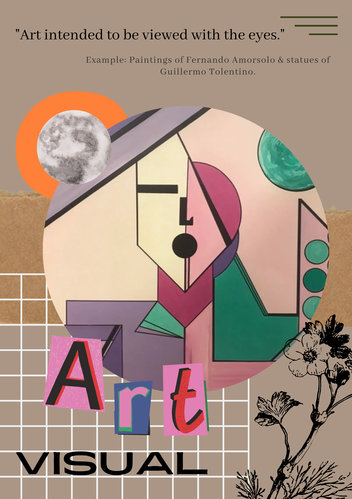
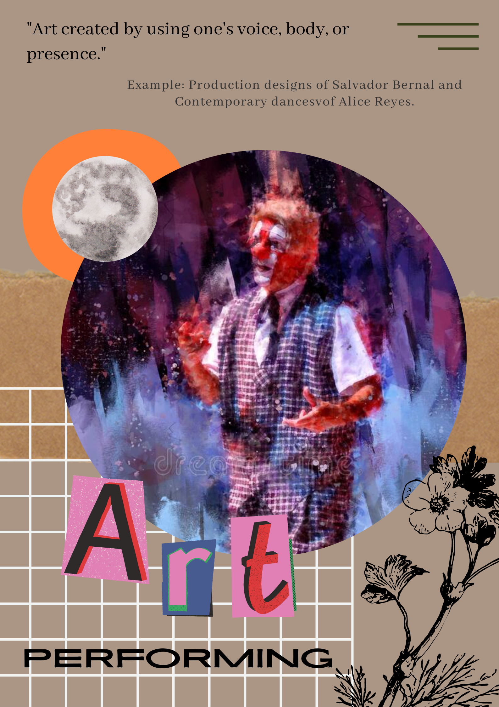
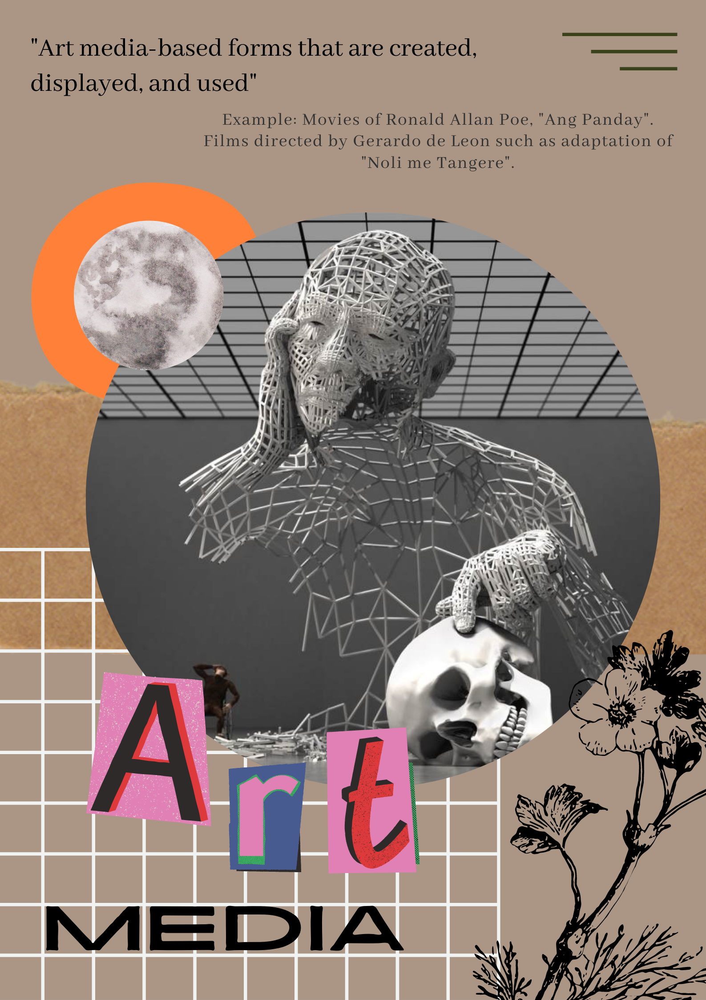
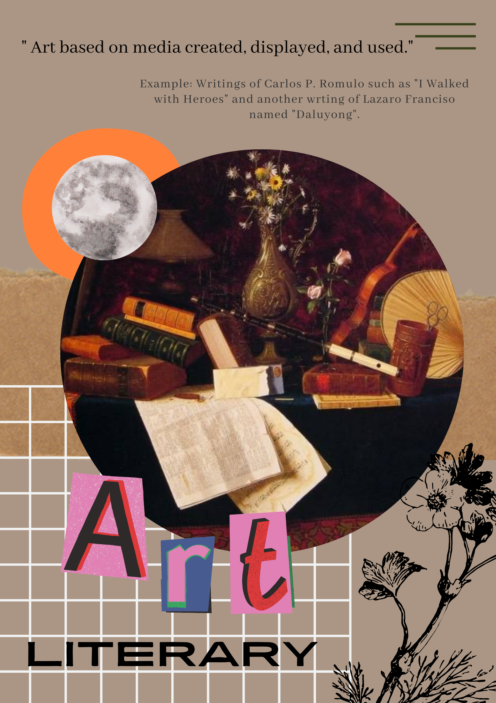

“Own your Style”
Clothes are a reflection of who we are.
Here in Fuku Apparel フク, we will make it possible for you to be closer to your favorite popular culture.
Wear who you are and own your style.
My Hero Academia |
Saiki K. |
| I. Know the Company Better |
|
Description |
|
“Fuku” (フク) is a term in Japanese which means clothes, items worn to cover our body. While “Apparel” means clothing
in general, it is derived from the meaning “to wear” which relates to outfitting, providing (someone) with a set of clothes.
Here in Fuku Apparel フク, we'll help to incorporate your favorite popular culture into your wardrobe. Fuku Apparel フク brings your wardrobe a twist of your favorite popular culture mainly on anime, games, Virtual youtubers (V-tubers) and Korean popular music (K-pop). |
|
Terminologies |
| Popular Culture: Also known as “Pop Culture” which refers to cultural items consumed by the majority of a society's population, such as music, art, literature, fashion, dance, film, cyberculture, television, and others. |
|
Management Team |
|
Fuku Apparel フク consists of 7 cofounders who are inclined in designing and programming. Being able to have set of
skills to run the company such as being flexible, determined, adaptive, and have skills for digital arts and programming. The
company consists of core teams for different tasks within the group but are still are able to multitask and are flexible to
each category.
Core Design Team
|
|
Legal Structure (Sole Proprietor, Partnership, Corporation) |
| Fuku Apparel フク will be collaborating with printing shops for the designs of clothing as the company doesn't have the right machinery to be able to conduct processes needed for printing them. The company started from scratch and is still in progress of finding printing cloth shops which ensures the quality and affordable to the customers' budget. |
|
II. Fuku Apparel フク: Origin and Our Starting Point |
|
Mission Statement |
|
|
How the Company was Founded |
| Fuku Apparel フク consists of 7 cofounders which were drawn together because they had similar interests and passions. Sharing the same fandoms and popular cultures they follow like Anime, Games, V-tubers and K-pop, the founders want to brought together people sharing the same interests by means of clothing. There is a famous line "You are what you wear", which implies that clothes reflect who you are. Being able to wear what you love and passionate about. |
|
III. What the Company Offers |
|
Products We Offer |
|
Customizable designs of your favorite pop culture. Fuku Apparel フク aims to sell these products to hobbyist of pop culture (e.g., Anime, Games, V-tubers, and K-pop) Examples of the apparel designs are found at the top. |
|
Value Proposition (VP) |
| Here in Fuku Apparel フク, we bring you customizable design of your favorite pop culture right into your wardrobe. Not only they can satisfy your hobbyist side but also your chosen pop-culture inspired design of clothes you wear everyday. |
|
Unique Selling Proposition (USP) |
| Fuku Apparel フク brings your pop culture needs right to your door, in just one tap. Take your pick in catalogue of original pop culture-inspired designs. From subtle nods to more daring ones, Fuku Apparel will help you freely and fashionably love what you love. |
|
IV. Goals of the Company |
|
Vision Statement |
| “Bring your favorite pop culture close to you (and your wardrobe).” Clothes reflect who we are, and that also applies to what we are passionate about. Clothing is something we wear everyday and a good way to express who we are. |
|
Core Values |
|
Leahne Joy Dela CruzCore Design Team |
Darica Jane MarcelinoCore Design Team |
Jullian Clairwin ServitoCore Design Team |
||
Kim Ashley BeltranContent Team |
Mychal Andres PejanaContent Team |
Samantha SoliveresLeader & Content Team |
||
Sean Luigi CaranzoLead Programmer |
||||
|
Each country has unique characteristics that distinguish it from others.
These characteristics range from lifestyle to notable buildings. America, for example, was known as the "Land of the Free."
In contrast, England is known for its Big Ben and Windsor Castle. As for the Philippines, it is known as "the call center of the world." We are also characterized as hospitable to our guests by foreigners. While these are some things that we are known for, we must remember the amazing things that our predecessors imparted to us. One of which is our art forms. In line with this, our organization aims to encourage the younger generation to partake in the performance of Philippine art because our country's art is the manifestation of our culture that has guided us for countless generations. As a background check of some sorts, here are 4 educational posters that portrays Filipino art through its 4 different forms. |
|

Visual Arts |

Performing Arts |
|
|

Media Arts |

Literary Arts |